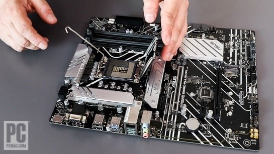
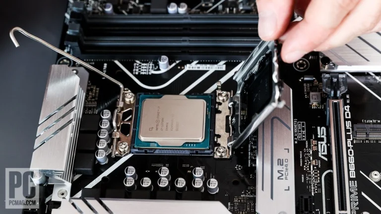

Take the motherboard out of its box and anti-static bag. (Grounded yourself first, yes?) Place it in front of you on your soft towel or perhaps a big mouse pad. You can also use the motherboard box itself.
As mentioned, we're using an Asus motherboard compatible with Intel's 12th and 13th Generation Core processors with a CPU socket known as LGA1700. LGA stands for land grid array and indicates that the contact pins between the motherboard and the CPU are mounted in the socket. AMD processors until recently used a PGA array—nothing to do with golf but a pin grid array in which the pins reside on the processor and fit into a perforated socket on the motherboard.Whether LGA or PGA, be exceedingly careful with both motherboard and processor and double that caution wherever the pins are involved. It's incredibly easy to bend the pins in a socket or on a chip and it can take DIY microsurgery to fix the damage, if it's fixable at all. Take great care with this step to avoid regret later. On one side of the motherboard's CPU socket, you'll see a load lever held in place by spring tension. A black plastic protective square covers the socket. Depress and pull aside the load lever and let it rise, releasing the retention frame over the CPU socket ...
That exposes the hundreds of pins inside the socket. (Look but don't touch!) Now survey the socket for a small arrow indicator in one corner (or possibly on the retention frame or the cover you just removed). Determine which corner the arrow indicates. Hold that thought. Now, unbox your processor. Our Core i7 comes in a retail box with a small plastic clamshell holding the chip. Snap it open and lift the chip out by its edges, taking great care not to touch the underside—you don't want to leave skin oil, peanut butter, or anything on the contacts. Examine the top of the chip, specifically the circuit board peeking out around the edge of the thicker metal die, and you should see an arrow in one corner. Orient the chip so the arrow matches that in the socket corner you found earlier.
Note that the chip has notches around the edges (two edges, in the case of this Core i7-13700K) ...
With the arrows lined up, these notches should align with nibs in the socket that will engage them. Lower the CPU into the socket parallel to the board. Alternately, you can line up the bottom edge and lower the chip from a 45-degree angle down to flat, but don't depress or mash the pins in any way. The CPU should fit in place perfectly without any force—if you have to push, you're doing it wrong. If the CPU seems off-kilter or not perfectly flat, gently remove it and try again, checking that you got the orientation right.
Let me repeat: Don't Force Anything! Do Not! If the CPU does not engage properly, the orientation or something else isn't right. Never, ever press a CPU into a socket. Chances are, you'll damage the pins and end up sad, mad, and possibly broke. Assuming your processor is lying flat and all looks well, give the CPU the gentlest of left-to-right wiggles to ensure it's perfectly seated. Be gentle! The chip should not budge a millimeter. Once you're confident the CPU is properly seated, you'll want to snap the plastic cover off the retaining frame. The plastic typically hooks to the frame and takes a little working or wiggling to get it off.
Set it aside. Next, lower the retention frame over the processor to a near-closed position, then depress the load lever into its original position.
Unlike most steps, this action will require some force, perhaps a bit more than seems comfortable. It should be a steady press. If anything doesn't look right, such as the top of the CPU (the silver heat spreader) not aligning perfectly with the opening in the retention frame, stop and double-check the seating of the processor. The lever should slide under its retaining hook and hold the frame closed under tension. Congratulations! You've successfully installed your CPU.
Before we move on, let's take a brief detour to look at the installation scheme for other common CPU sockets, in case you're not using a late-model Intel chip. Alternative CPU Installation: AMD Ryzen AM4 and AM5 If you have an AMD Ryzen CPU and motherboard, how you install the former will vary depending on whether the latter is an older AM4 board or one of the new Ryzen 7000 platforms that uses the AM5 socket.
AM4 chips (and older legacy AMD processors) have pins on the underside ...
The principles with AM4 and AM5 are generally the same as we outlined for Intel's LGA1700: Release the tension lever alongside the socket, raise the retention frame, pop off the protective cover, find the matching arrow, and align your processor with the arrow before dropping it into the socket.
The carved-out notches and protrusions around the CPU and socket edges will be slightly different, but the principles are the same: Take your time and force nothing. This is especially true of AM4 processors with their delicate pins. Never place these chips face down anywhere but in their plastic carrier or in a socket, and for heaven's sake don't drop them. Dozens of bent pins and salty tears will follow.